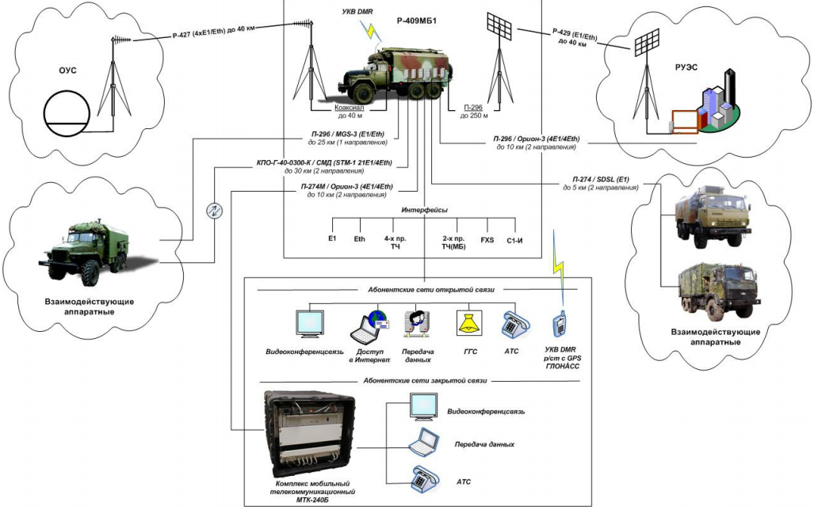

Модернизированная радиорелейная станция Р-409МБ1
Описание радиостанции
Предназначение
Радиорелейная станция Р-409МБ1 предназначена для организации радиорелейных, волоконно-оптических и проводных
линий связи, радиодоступа подвижных абонентов, а также развертывания сетей передачи данных,
видеоконференцсвязи, автоматической телефонной и громкоговорящей открытой и засекреченной связи на полевых
пунктах управления Вооруженных Сил тактического звена управления.
Станция Р-409МБ1 обеспечивает
- функционирование АРМ оператора и АРМ телефониста;
- организацию 2 цифровых радиорелейных линий связи с использованием радиорелейных станций Р-429 в диапазоне
350 МГц и Р-427 в диапазоне 1,4 ГГц;
- организацию 2 волоконно-оптических линий связи уровня STM-1 с использованием мультиплексора синхронного
доступа СМД-с по одномодовому оптоволоконному кабелю;
- организацию цифровой системы передачи (далее – ЦСП) с использованием модема Мегатранс-3М, обеспечивающего
дуплексную передачу информации со скоростью до 2048 кбит/с (интерфейсы Е1 и Ethernet 10/100 BaseT) по двум
парам кабеля П-296 длиной до 25 км;
- организацию 4 ЦСП с использованием модема Орион-3, обеспечивающего дуплексную передачу информации со
скоростью до 5632 кбит/с (интерфейсы 4хЕ1 и Ethernet 10/100 BaseT) по одной паре кабеля П-296 длиной до 10
км;
- организацию 2 SDSLЦСП с использованием мультиплексора синхронного доступа СМД-с, обеспечивающего
дуплексную передачу информации со скоростью до 2048 кбит/с по одной паре кабеля П-274М длиной до 2 км;
- формирование 42 цифровых потоков Е1 и 30 каналов Ethernet;
- мультиплексирование / демультиплексирование образованных цифровых потоков Е1 в абонентские интерфейсы
емкостью 8 каналов ТЧ, 4 канала С1-И, 4 канала ТЧ (МБ), 4 линии FXS (АК);
- конвертирование 4 сигналов Е1 в Ethernet 10/100BaseTи обратно;
- функционирование локальной сети радиодоступа подвижных абонентов (до 5 абонентов) с обеспечением доступа в
сеть связи общего пользования;
- развертывание с использованием комплекса мобильного телекоммуникационного МТК-240Б засекреченных сетей
передачи данных и видеоконференцсвязи, а также сети автоматической телефонной связи емкостью до 16
аналоговых абонентских линий;
- развертывание открытых сетей передачи данных и видеоконференцсвязи, а также сети автоматической телефонной
связи с использованием АТСЭ ФММ емкостью до 20 аналоговых абонентских линий, в том числе 12 линий через
систему абонентского уплотнения Ф4/12, 8 линий МБ и 4 линий FXS;
- развертывание с использованием оборудования громкой связи БС-1 и БГС сети громкоговорящей связи емкостью
до 20 оконечных абонентских установок и возможностью объединения ее с другими сетями ГГС по 10 каналам ТЧ;
- обслуживание абонентов по заказной системе с использованием АРМ телефониста;
- кросс-коммутацию на уровне ОЦК и каналов Е1;
- коммутацию трафика Ethernet с функциями маршрутизации;
- ручную коммутацию каналов с возможностью их вывода на кабельные вводы;
- организацию служебной связи по внутриузловым соединительным линиям и образованным каналам связи;
- юстировку антенн радиорелейных станций по азимуту с использованием ручного антенно-поворотного
устройства;
- развертывание периметровой охранной сигнализации на 5 секторов охраны;
- техническое сопряжение с аналоговыми и цифровыми каналами связи полевых узлов связи различной
принадлежности, стационарных узлов связи Вооруженных Сил и сети электросвязи общего пользования.
Сравнительная характеристика радиорелейных станций Р-409МА и Р-409МБ1
| Технические характеристики |
Р-409МА (СССР) |
Р-409МБ1 |
| Радиорелейное направление связи |
2 (аналоговых) в диапазоне 60-480 МГц |
4 (цифровых) в диапазонах
Р-427: 1427-1463 + 1362-1392 МГц;
Р-429: 240-480 МГц
|
| Кабельная линия связи |
2 (аналоговые) |
5 (цифровых) |
| Волоконно-оптическая линия связи |
нет |
2 (цифровыe) |
| Транкинговая связь |
нет |
1 (ретранслятор) + 5 (абонентов) |
| Канал тональной частоты |
12 |
12 |
| Канал стыка С1-И |
нет |
4 |
| Поток Е1 |
нет |
43 (по 2 Мбит/с) |
| Порт Ethernet |
нет |
31 (до 300 Мбит/с) |
| Абонентская емкость АТС открытой связи |
нет |
20 АТС + 8 МБ |
| Абонентская емкость АТС засекреченной связи |
нет |
16 АТС |
| Сеть громкоговорящей связи |
нет |
20 абонентов |
| Передача данных |
нет |
есть (открытая и ЗАС) |
| Видеоконференцсвязь |
нет |
есть (ЗАС) |
| Навигационная система (ГСНС) |
нет |
есть |
| Система периметровой охраны |
нет |
есть (на 5 секторов) |
| Коммутация каналов (потоков, портов) |
ручная (шнуровая) |
автоматизированная + ручная |
| Управление |
ручное |
автоматизированное (2 АРМ) |
| Гарантированное питание от АКБ |
нет |
не менее 1 ч (всего оборудования) |
| Автоматическое резервирование источников питания |
нет |
есть |
| Работа АКБ в буферном режиме |
нет |
есть |
| Агрегаты электропитания |
2 (бензиновых) |
2 (дизельных) |
| Максимальная потребляемая мощность, кВт |
4,0 |
1,8 |
| Система освещения |
лампы накаливания |
светодиодное |
Тактико-технические характеристики
Условия эксплуатации
Радиорелейная станция Р-409МБ1 обеспечивает надежную работу при температуре окружающего воздуха от минус 40 до
плюс 50ºС и относительной влажности воздуха до 98% при температуре 25ºС.
Основные технические характеристики
| Наименование |
Количество |
| АРМ оператора |
1 |
| АРМ телефониста |
1 |
| АРМ телефониста переносное |
1 |
| ЦСП (STM-1), ВОЛС до 30 км |
2 |
| ЦСП (Е1/ Ethernet), КЛС до 25 км |
2 |
| ЦСП (2Е1/ Ethernet), КЛС до 10 км |
2 |
| ЦСП (Е1), КЛС до 5 км |
2 |
| каналов Е1 12 |
28 |
| Ethernet |
10 |
| 4-х пр. КТЧ с ТВ |
14 |
| 2-х пр. КТЧ с ИВ |
4 |
| канал С1-И |
4 |
| 2-х пр. СЛ (FXО/FXS) |
4 |
Электропитание
- промышленная сеть 230В, 50 Гц;
- аккумуляторная батарея (в течение 1 часа);
- два дизельных электрогенератора по 5 кВт.
Потребляемая мощность – 2,2 кВт.
Достоинства
Благодаря применению перспективных телекоммуникационных технологий и современной элементной базы в станции
реализованы как функции коммутации каналов, так и функции коммутации пакетов для предоставления перспективных
услуг связи "Triple Play" (голос, видео, данные), что обеспечивает широкие эксплуатационные возможности.
Схема организации связи
